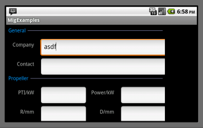
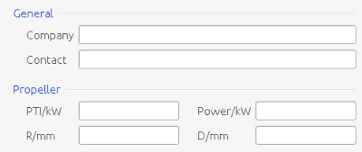

Here's an example of what identical layout code in android and in swing produces (taken from the miglayout demo)

Custom miglayout build. (Removed java.beans.Beans dependency)
Two jars are needed:
The required minSdkVersion is at least 4. Without this the dimensions are calculated incorrectly. So be sure your Androidmanifest.xml contains:
<uses-sdk android:minSdkVersion="4" />
BSD
Contributions are more than welcome. Please fork the project and make a pull request.
Tuomas Huhtanen
You can download this project in either zip or tar formats.
You can also clone the project with Git by running:
$ git clone git://github.com/saynomoo/mig4android